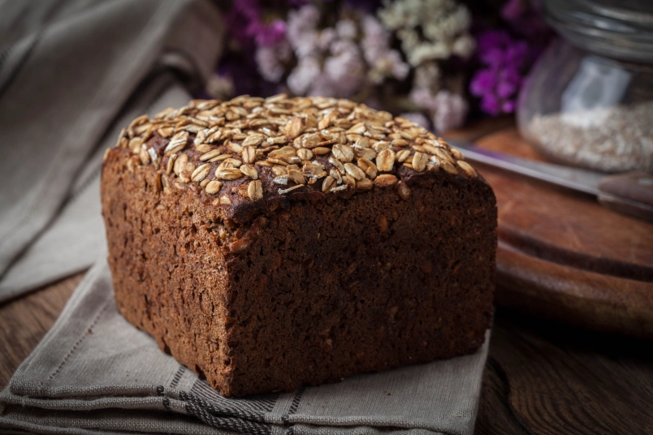

Ezekiel Bread

This Ezekiel bread is the bread that Ezekiel lived off of while he was in
the desert for two years. It is supposed to be nutritionally complete. The
recipe calls for grinding your own flour from a variety of grains and
dried beans.
- 4 cups warm water (110 degrees F/45 degrees C)
- ½ cup olive oil
- 2 (.25 ounce) packages active dry yeast
- 2 ½ cups wheat berries
- 1 ½ cups spelt flour
- ½ cup barley
- ½ cup millet
- ¼ cup dry green lentils
- 2 tablespoons dry great Northern beans
- 2 tablespoons dry kidney beans
- 2 tablespoons dried pinto beans
- 2 tablespoons salt, or to taste
-
Mix water, honey, olive oil, and yeast in a large bowl. Let sit for 3 to
5 minutes.
-
Meanwhile, stir together wheat berries, spelt flour, barley, millet,
lentils, great northern beans, kidney beans, and pinto beans together
until well mixed. Grind in a flour mill.
-
Add fresh milled flour mixture and salt to yeast mixture; stir until
well mixed, about 10 minutes. The dough will be loose.
- Pour dough into two greased 9x5-inch loaf pans.
-
Let rise in a warm place until dough has reached the top of the pan,
about 1 hour.
- Preheat the oven to 350 degrees F (175 degrees C).
-
Bake in the preheated oven until loaves are golden brown, 45 to 50
minutes.